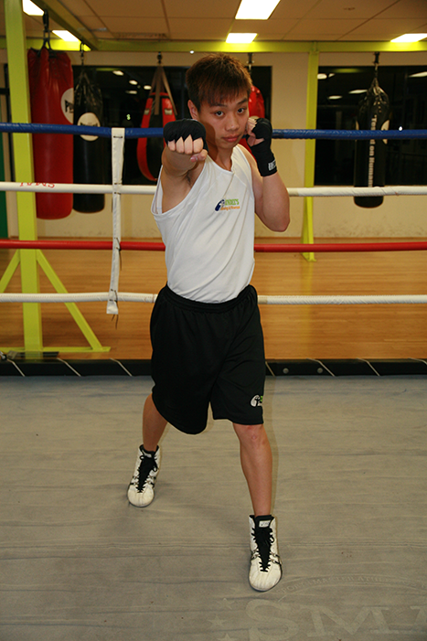

Your chin is tucked; upon landing your arm is extended, but not to the point of hyperextension.
Movements
- Position your body directly in front of a full length mirror. This will enable you to observe both your shoulder position as well as your foot work. Being right handed, ensure that your left foot is placed in front of your right, as you will be leading with the left side of your body at all times.
- Keeping your hands in front of your chin, begin to push off using your right foot. This will cause your body to twist, generating much of the power for the straight right. Your hips should be moving toward the intended target, your left knee is bent for balance and hips are squared. Being in this position causes you to become vulnerable to attack as your body is squared off.
- Throw your right shoulder forward and pivot your hips; your whole body should rotate.
- Your right foot should pivot and push forward.
- Recover quickly by bringing your right hand back to your head.
- Your hips should cease moving forward when squared with your opponent (or heavy bag and focus mitts), but only after you've connected your right hand with the intended target.
- Move your right arm forward, moving through your intended target, using your right hand as a guide.
- Fully extend your arm while turning the wrist. Your elbow should rise to shoulder level while keeping your chin tucked in.